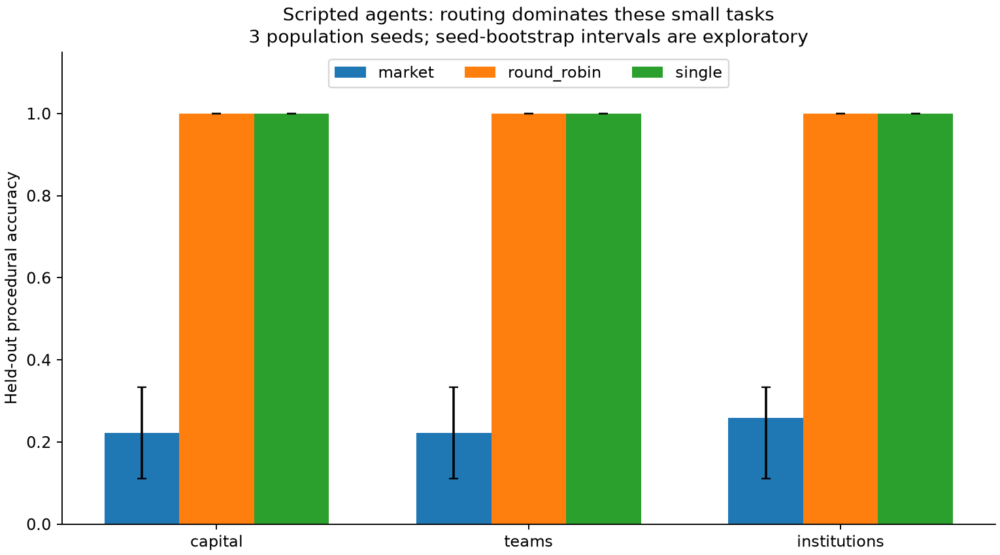
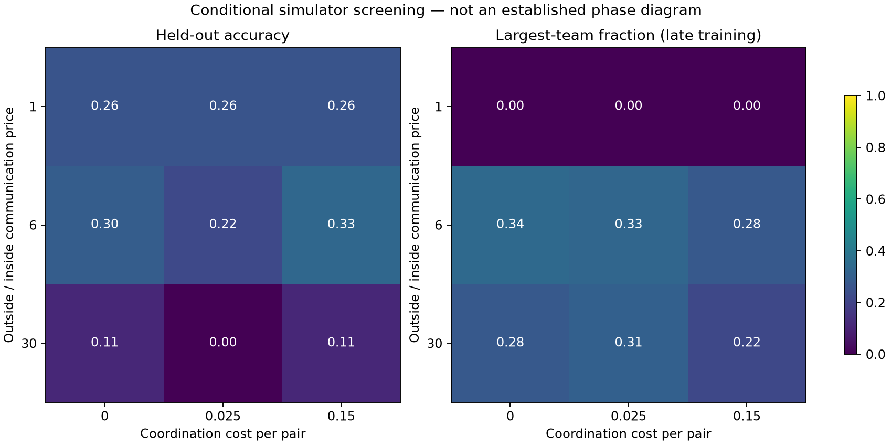

Three research projects: cognitive capital, labor markets and teams, adaptive institutions.
Scripted simulation only. 35 tests passed; 90 seeded matrix runs completed. No live LLM calls or GPU jobs. These plots diagnose mechanisms; they do not demonstrate LLM emergence.
Research design and sources · Findings and limits · Run instructions · Implementation
The market variants scored 22–26% on these procedural tasks, versus 100% for round-robin and the full-information scripted solver. The local trigger and turn concentration are the primary next variables to investigate.

| Project | Routing | Mean test accuracy |
|---|---|---|
| capital | market | 22.2% |
| capital | round_robin | 100.0% |
| capital | single | 100.0% |
| teams | market | 22.2% |
| teams | round_robin | 100.0% |
| teams | single | 100.0% |
| institutions | market | 25.9% |
| institutions | round_robin | 100.0% |
| institutions | single | 100.0% |
Teams form under the scripted cost rule, but higher communication boundaries do not reliably improve performance. Three seeds per cell are insufficient to establish a phase transition.
